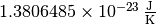
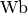

Units and Quantities (astropy.units)¶
Introduction¶
astropy.units handles defining, converting between, and performing
arithmetic with physical quantities, such as meters, seconds, Hz,
etc. It also handles logarithmic units such as magnitude and decibel.
astropy.units does not know spherical geometry or sexagesimal
(hours, min, sec): if you want to deal with celestial coordinates,
see the astropy.coordinates package.
Getting Started¶
Most users of the astropy.units package will work with “quantities”: the combination of a value and a unit. The easiest way to create
a Quantity is to simply multiply or divide a value by one of the built-in
units. It works with scalars, sequences and Numpy arrays:
>>> from astropy import units as u
>>> 42.0 * u.meter
<Quantity 42.0 m>
>>> [1., 2., 3.] * u.m
<Quantity [ 1., 2., 3.] m>
>>> import numpy as np
>>> np.array([1., 2., 3.]) * u.m
<Quantity [ 1., 2., 3.] m>
You can get the unit and value from a Quantity using the unit and
value members:
>>> q = 42.0 * u.meter
>>> q.value
42.0
>>> q.unit
Unit("m")
From this simple building block, it’s easy to start combining quantities with different units:
>>> 15.1 * u.meter / (32.0 * u.second)
<Quantity 0.471875 m / s>
>>> 3.0 * u.kilometer / (130.51 * u.meter / u.second)
<Quantity 0.022986744310780783 km s / m>
>>> (3.0 * u.kilometer / (130.51 * u.meter / u.second)).decompose()
<Quantity 22.986744310780782 s>
Unit conversion is done using the
to() method, which returns a new
Quantity in the given unit:
>>> x = 1.0 * u.parsec
>>> x.to(u.km)
<Quantity 30856775814671.914 km>
It is also possible to work directly with units at a lower level, for example, to create custom units:
>>> from astropy.units import imperial
>>> cms = u.cm / u.s
>>> # ...and then use some imperial units
>>> mph = imperial.mile / u.hour
>>> # And do some conversions
>>> q = 42.0 * cms
>>> q.to(mph)
<Quantity 0.939513242662849 mi / h>
Units that “cancel out” become a special unit called the “dimensionless unit”:
>>> u.m / u.m
Unit(dimensionless)
astropy.units is able to match compound units against the units it already
knows about:
>>> (u.s ** -1).compose()
[Unit("Bq"), Unit("Hz"), Unit("3.7e+10 Ci")]
And it can convert between unit systems, such as SI or CGS:
>>> (1.0 * u.Pa).cgs
<Quantity 10.0 Ba>
The units mag, dex and dB are special, being logarithmic
units, for which a value is the logarithm of a physical
quantity in a given unit. These can be used with a physical unit in
parentheses to create a corresponding logarithmic quantity:
>>> -2.5 * u.mag(u.ct / u.s)
<Magnitude -2.5 mag(ct / s)>
>>> from astropy import constants as c
>>> u.Dex((c.G * u.M_sun / u.R_sun**2).cgs)
<Dex 4.438067627303133 dex(cm / s2)>
astropy.units also handles equivalencies, such as
that between wavelength and frequency. To use that feature, equivalence objects
are passed to the to() conversion
method. For instance, a conversion from wavelength to frequency doesn’t
normally work:
>>> (1000 * u.nm).to(u.Hz)
Traceback (most recent call last):
...
UnitConversionError: 'nm' (length) and 'Hz' (frequency) are not convertible
but by passing an equivalency list, in this case spectral(), it does:
>>> (1000 * u.nm).to(u.Hz, equivalencies=u.spectral())
<Quantity 299792457999999.94 Hz>
Quantities and units can be printed nicely to strings using the Format String Syntax, the
preferred string formatting syntax in recent versions of python. Format
specifiers (like 0.03f) in new-style format strings will used to format the
quantity value:
>>> q = 15.1 * u.meter / (32.0 * u.second)
>>> q
<Quantity 0.471875 m / s>
>>> "{0:0.03f}".format(q)
'0.472 m / s'
The value and unit can also be formatted separately. Format specifiers used on units can be used to choose the unit formatter:
>>> q = 15.1 * u.meter / (32.0 * u.second)
>>> q
<Quantity 0.471875 m / s>
>>> "{0.value:0.03f} {0.unit:FITS}".format(q)
'0.472 m s-1'
Using astropy.units¶
See Also¶
- FITS Standard for units in FITS.
- The Units in the VO 1.0 Standard for representing units in the VO.
- OGIP Units: A standard for storing units in OGIP FITS files.
- Standards for astronomical catalogues units.
- IAU Style Manual.
- A table of astronomical unit equivalencies
Reference/API¶
astropy.units.quantity Module¶
This module defines the Quantity object, which represents a number with some
associated units. Quantity objects support operations like ordinary numbers,
but will deal with unit conversions internally.
Classes¶
Quantity |
A Quantity represents a number with some associated unit. |
SpecificTypeQuantity |
Superclass for Quantities of specific physical type. |
QuantityInfoBase([bound]) |
|
QuantityInfo([bound]) |
Container for meta information like name, description, format. |
Class Inheritance Diagram¶
astropy.units Package¶
This subpackage contains classes and functions for defining and converting between different physical units.
This code is adapted from the pynbody units module written by Andrew Pontzen, who has granted the Astropy project permission to use the code under a BSD license.
Functions¶
add_enabled_equivalencies(equivalencies) |
Adds to the equivalencies enabled in the unit registry. |
add_enabled_units(units) |
Adds to the set of units enabled in the unit registry. |
brightness_temperature(beam_area, disp) |
Defines the conversion between Jy/beam and “brightness temperature”,  , in Kelvins. , in Kelvins. |
def_physical_type(unit, name) |
Adds a new physical unit mapping. |
def_unit(s[, represents, doc, format, ...]) |
Factory function for defining new units. |
dimensionless_angles() |
Allow angles to be equivalent to dimensionless (with 1 rad = 1 m/m = 1). |
doppler_optical(rest) |
Return the equivalency pairs for the optical convention for velocity. |
doppler_radio(rest) |
Return the equivalency pairs for the radio convention for velocity. |
doppler_relativistic(rest) |
Return the equivalency pairs for the relativistic convention for velocity. |
get_current_unit_registry() |
|
get_physical_type(unit) |
Given a unit, returns the name of the physical quantity it represents. |
logarithmic() |
Allow logarithmic units to be converted to dimensionless fractions |
mass_energy() |
Returns a list of equivalence pairs that handle the conversion between mass and energy. |
molar_mass_amu() |
Returns the equivalence between amu and molar mass. |
parallax() |
Returns a list of equivalence pairs that handle the conversion between parallax angle and distance. |
pixel_scale(pixscale) |
Convert between pixel distances (in units of pix) and angular units, given a particular pixscale. |
plate_scale(platescale) |
Convert between lengths (to be interpreted as lengths in the focal plane) and angular units with a specified platescale. |
quantity_input |
A decorator for validating the units of arguments to functions. |
set_enabled_equivalencies(equivalencies) |
Sets the equivalencies enabled in the unit registry. |
set_enabled_units(units) |
Sets the units enabled in the unit registry. |
spectral() |
Returns a list of equivalence pairs that handle spectral wavelength, wave number, frequency, and energy equivalences. |
spectral_density(wav[, factor]) |
Returns a list of equivalence pairs that handle spectral density with regard to wavelength and frequency. |
temperature() |
Convert between Kelvin, Celsius, and Fahrenheit here because Unit and CompositeUnit cannot do addition or subtraction properly. |
temperature_energy() |
Convert between Kelvin and keV(eV) to an equivalent amount. |
Classes¶
CompositeUnit(scale, bases, powers[, ...]) |
Create a composite unit using expressions of previously defined units. |
Decibel |
|
DecibelUnit([physical_unit, function_unit]) |
Logarithmic physical units expressed in dB |
Dex |
|
DexUnit([physical_unit, function_unit]) |
Logarithmic physical units expressed in magnitudes |
FunctionQuantity |
A representation of a (scaled) function of a number with a unit. |
FunctionUnitBase([physical_unit, function_unit]) |
Abstract base class for function units. |
IrreducibleUnit(st[, doc, format, namespace]) |
Irreducible units are the units that all other units are defined in terms of. |
LogQuantity |
A representation of a (scaled) logarithm of a number with a unit |
LogUnit([physical_unit, function_unit]) |
Logarithmic unit containing a physical one |
MagUnit(*args, **kwargs) |
Logarithmic physical units expressed in magnitudes |
Magnitude |
|
NamedUnit(st[, doc, format, namespace]) |
The base class of units that have a name. |
PrefixUnit(st[, represents, doc, format, ...]) |
A unit that is simply a SI-prefixed version of another unit. |
Quantity |
A Quantity represents a number with some associated unit. |
QuantityInfo([bound]) |
Container for meta information like name, description, format. |
QuantityInfoBase([bound]) |
|
SpecificTypeQuantity |
Superclass for Quantities of specific physical type. |
Unit(st[, represents, doc, format, namespace]) |
The main unit class. |
UnitBase |
Abstract base class for units. |
UnitConversionError |
Used specifically for errors related to converting between units or interpreting units in terms of other units. |
UnitTypeError |
Used specifically for errors in setting to units not allowed by a class. |
UnitsError |
The base class for unit-specific exceptions. |
UnitsWarning |
The base class for unit-specific warnings. |
UnrecognizedUnit(st[, doc, format, namespace]) |
A unit that did not parse correctly. |
Class Inheritance Diagram¶
astropy.units.format Package¶
A collection of different unit formats.
Functions¶
get_format([format]) |
Get a formatter by name. |
Classes¶
Base |
The abstract base class of all unit formats. |
Generic |
A “generic” format. |
CDS |
Support the Centre de Données astronomiques de Strasbourg Standards for Astronomical Catalogues 2.0 format, and the complete set of supported units. |
Console |
Output-only format for to display pretty formatting at the console. |
Fits |
The FITS standard unit format. |
Latex |
Output LaTeX to display the unit based on IAU style guidelines. |
LatexInline |
Output LaTeX to display the unit based on IAU style guidelines with negative powers. |
OGIP |
Support the units in Office of Guest Investigator Programs (OGIP) FITS files. |
Unicode |
Output-only format to display pretty formatting at the console using Unicode characters. |
Unscaled |
A format that doesn’t display the scale part of the unit, other than that, it is identical to the Generic format. |
VOUnit |
The IVOA standard for units used by the VO. |
Class Inheritance Diagram¶
astropy.units.si Module¶
This package defines the SI units. They are also available in the
astropy.units namespace.
| Unit | Description | Represents | Aliases | SI Prefixes |
|---|---|---|---|---|
a |
annum (a) | annum |
Yes | |
A |
ampere: base unit of electric current in SI | ampere, amp |
Yes | |
Angstrom |
ångström: 10 ** -10 m |  |
AA, angstrom |
No |
arcmin |
arc minute: angular measurement | arcminute |
Yes | |
arcsec |
arc second: angular measurement | arcsecond |
Yes | |
bar |
bar: pressure | No | ||
Bq |
becquerel: unit of radioactivity |  |
becquerel |
No |
C |
coulomb: electric charge |  |
coulomb |
Yes |
cd |
candela: base unit of luminous intensity in SI | candela |
Yes | |
Ci |
curie: unit of radioactivity | curie |
No | |
d |
day (d) | day |
Yes | |
deg |
degree: angular measurement 1/360 of full rotation | degree |
Yes | |
deg_C |
Degrees Celsius | Celsius |
No | |
eV |
Electron Volt |  |
electronvolt |
Yes |
F |
Farad: electrical capacitance |  |
Farad, farad |
Yes |
fortnight |
fortnight |  |
No | |
g |
gram (g) |  |
gram |
Yes |
H |
Henry: inductance | Henry, henry |
Yes | |
h |
hour (h) |  |
hour, hr |
Yes |
hourangle |
hour angle: angular measurement with 24 in a full circle |  |
No | |
Hz |
Frequency | Hertz, hertz |
Yes | |
J |
Joule: energy | Joule, joule |
Yes | |
K |
Kelvin: temperature with a null point at absolute zero. | Kelvin |
Yes | |
kg |
kilogram: base unit of mass in SI. | kilogram |
No | |
l |
liter: metric unit of volume | L, liter |
Yes | |
lm |
lumen: luminous flux | lumen |
Yes | |
lx |
lux: luminous emittence | lux |
Yes | |
m |
meter: base unit of length in SI | meter |
Yes | |
mas |
milli arc second: angular measurement | No | ||
micron |
micron: alias for micrometer (um) |  |
No | |
min |
minute (min) |  |
minute |
Yes |
mol |
mole: amount of a chemical substance in SI. | mole |
Yes | |
N |
Newton: force | Newton, newton |
Yes | |
Ohm |
Ohm: electrical resistance | ohm |
Yes | |
Pa |
Pascal: pressure |  |
Pascal, pascal |
Yes |
% |
percent: one hundredth of unity, factor 0.01 |  |
pct |
No |
rad |
radian: angular measurement of the ratio between the length on an arc and its radius | radian |
Yes | |
s |
second: base unit of time in SI. | second |
Yes | |
S |
Siemens: electrical conductance |  |
Siemens, siemens |
Yes |
sday |
Sidereal day (sday) is the time of one rotation of the Earth. |  |
No | |
sr |
steradian: unit of solid angle in SI |  |
steradian |
Yes |
t |
Metric tonne | tonne |
No | |
T |
Tesla: magnetic flux density |  |
Tesla, tesla |
Yes |
uas |
micro arc second: angular measurement |  |
No | |
V |
Volt: electric potential or electromotive force | Volt, volt |
Yes | |
W |
Watt: power |  |
Watt, watt |
Yes |
Wb |
Weber: magnetic flux |  |
Weber, weber |
Yes |
wk |
week (wk) |  |
week |
No |
yr |
year (yr) | year |
Yes |
astropy.units.cgs Module¶
This package defines the CGS units. They are also available in the
top-level astropy.units namespace.
| Unit | Description | Represents | Aliases | SI Prefixes |
|---|---|---|---|---|
abC |
abcoulomb: CGS (EMU) of charge | abcoulomb |
No | |
Ba |
Barye: CGS unit of pressure |  |
Barye, barye |
Yes |
Bi |
Biot: CGS (EMU) unit of current | Biot, abA, abampere |
No | |
C |
coulomb: electric charge | |
coulomb |
No |
cd |
candela: base unit of luminous intensity in SI | candela |
No | |
cm |
centimeter (cm) |  |
centimeter |
No |
D |
Debye: CGS unit of electric dipole moment |  |
Debye, debye |
Yes |
deg_C |
Degrees Celsius | Celsius |
No | |
dyn |
dyne: CGS unit of force |  |
dyne |
Yes |
erg |
erg: CGS unit of energy |  |
Yes | |
Fr |
Franklin: CGS (ESU) unit of charge | Franklin, statcoulomb, statC, esu |
No | |
G |
Gauss: CGS unit for magnetic field | Gauss, gauss |
Yes | |
g |
gram (g) | |
gram |
No |
Gal |
Gal: CGS unit of acceleration |  |
gal |
Yes |
k |
kayser: CGS unit of wavenumber |  |
Kayser, kayser |
Yes |
K |
Kelvin: temperature with a null point at absolute zero. | Kelvin |
No | |
mol |
mole: amount of a chemical substance in SI. | mole |
No | |
P |
poise: CGS unit of dynamic viscosity |  |
poise |
Yes |
rad |
radian: angular measurement of the ratio between the length on an arc and its radius | radian |
No | |
s |
second: base unit of time in SI. | second |
No | |
sr |
steradian: unit of solid angle in SI | |
steradian |
No |
St |
stokes: CGS unit of kinematic viscosity | stokes |
Yes | |
statA |
statampere: CGS (ESU) unit of current | statampere |
No |
astropy.units.astrophys Module¶
This package defines the astrophysics-specific units. They are also
available in the astropy.units namespace.
| Unit | Description | Represents | Aliases | SI Prefixes |
|---|---|---|---|---|
adu |
adu | Yes | ||
AU |
astronomical unit: approximately the mean Earth–Sun distance. |  |
au, astronomical_unit |
Yes |
barn |
barn: unit of area used in HEP |  |
barn |
Yes |
beam |
beam | Yes | ||
bin |
bin | Yes | ||
bit |
b (bit) | b |
Yes | |
byte |
B (byte) |  |
B |
Yes |
chan |
chan | Yes | ||
ct |
count (ct) | count |
Yes | |
cycle |
cycle: angular measurement, a full turn or rotation |  |
cy |
No |
earthMass |
Earth mass | M_earth, Mearth |
No | |
earthRad |
Earth radius | R_earth, Rearth |
No | |
electron |
Number of electrons | No | ||
jupiterMass |
Jupiter mass | M_jup, Mjup, M_jupiter, Mjupiter |
No | |
jupiterRad |
Jupiter radius |  |
R_jup, Rjup, R_jupiter, Rjupiter |
No |
Jy |
Jansky: spectral flux density |  |
Jansky, jansky |
Yes |
lyr |
Light year |  |
lightyear |
Yes |
M_e |
Electron mass | No | ||
M_p |
Proton mass | No | ||
pc |
parsec: approximately 3.26 light-years. | parsec |
Yes | |
ph |
photon (ph) | photon |
Yes | |
pix |
pixel (pix) | pixel |
Yes | |
R |
Rayleigh: photon flux | Rayleigh, rayleigh |
Yes | |
Ry |
Rydberg: Energy of a photon whose wavenumber is the Rydberg constant |  |
rydberg |
Yes |
solLum |
Solar luminance | L_sun, Lsun |
No | |
solMass |
Solar mass | M_sun, Msun |
No | |
solRad |
Solar radius | R_sun, Rsun |
No | |
Sun |
Sun | No | ||
u |
Unified atomic mass unit | Da, Dalton |
Yes | |
vox |
voxel (vox) | voxel |
Yes |
astropy.units.function.units Module¶
This package defines units that can also be used as functions of other units.
If called, their arguments are used to initialize the corresponding function
unit (e.g., u.mag(u.ct/u.s)). Note that the prefixed versions cannot be
called, as it would be unclear what, e.g., u.mmag(u.ct/u.s) would mean.
| Unit | Description | Represents | Aliases | SI Prefixes |
|---|---|---|---|---|
dB |
Decibel: ten per base 10 logarithmic unit | decibel |
No | |
dex |
Dex: Base 10 logarithmic unit | No | ||
mag |
Astronomical magnitude: -2.5 per base 10 logarithmic unit |  |
Yes |
astropy.units.imperial Module¶
This package defines colloquially used Imperial units. They are
available in the astropy.units.imperial namespace, but not in the
top-level astropy.units namespace, e.g.:
>>> import astropy.units as u
>>> mph = u.imperial.mile / u.hour
>>> mph
Unit("mi / h")
To include them in compose and the results of
find_equivalent_units, do:
>>> import astropy.units as u
>>> u.imperial.enable()
| Unit | Description | Represents | Aliases | SI Prefixes |
|---|---|---|---|---|
ac |
International acre |  |
acre |
No |
BTU |
British thermal unit |  |
btu |
No |
cal |
Thermochemical calorie: pre-SI metric unit of energy |  |
calorie |
No |
cup |
U.S. |  |
No | |
deg_F |
Degrees Fahrenheit | Fahrenheit |
No | |
foz |
U.S. |  |
fluid_oz, fluid_ounce |
No |
ft |
International foot |  |
foot |
No |
fur |
Furlong | furlong |
No | |
gallon |
U.S. |  |
No | |
hp |
Electrical horsepower | horsepower |
No | |
inch |
International inch |  |
No | |
kcal |
Calorie: colloquial definition of Calorie |  |
Cal, Calorie, kilocal, kilocalorie |
No |
kip |
Kilopound: force | kilopound |
No | |
kn |
nautical unit of speed: 1 nmi per hour | kt, knot, NMPH |
No | |
lb |
International avoirdupois pound: mass | lbm, pound |
No | |
lbf |
Pound: force |  |
No | |
mi |
International mile | mile |
No | |
mil |
Thousandth of an inch |  |
thou |
No |
nmi |
Nautical mile |  |
nauticalmile, NM |
No |
oz |
International avoirdupois ounce: mass |  |
ounce |
No |
pint |
U.S. | No | ||
psi |
Pound per square inch: pressure |  |
No | |
quart |
U.S. |  |
No | |
slug |
slug: mass | No | ||
st |
International avoirdupois stone: mass |  |
stone |
No |
tbsp |
U.S. |  |
tablespoon |
No |
ton |
International avoirdupois ton: mass | No | ||
tsp |
U.S. |  |
teaspoon |
No |
yd |
International yard |  |
yard |
No |
Functions¶
enable() |
Enable Imperial units so they appear in results of find_equivalent_units and compose. |
astropy.units.cds Module¶
This package defines units used in the CDS format, both the units defined in Centre de Données astronomiques de Strasbourg Standards for Astronomical Catalogues 2.0 format and the complete set of supported units. This format is used by VOTable up to version 1.2.
These units are not available in the top-level astropy.units
namespace. To use these units, you must import the astropy.units.cds
module:
>>> from astropy.units import cds
>>> q = 10. * cds.lyr
To include them in compose and the results of
find_equivalent_units, do:
>>> from astropy.units import cds
>>> cds.enable()
| Unit | Description | Represents | Aliases | SI Prefixes |
|---|---|---|---|---|
% |
percent | No | ||
--- |
dimensionless and unscaled |  |
No | |
\h |
Planck constant | Yes | ||
a |
year | Yes | ||
A |
Ampere | Yes | ||
a0 |
Bohr radius | Yes | ||
AA |
Angstrom |  |
Å, Angstrom, Angstroem |
Yes |
al |
Light year |  |
Yes | |
alpha |
Fine structure constant | Yes | ||
arcm |
minute of arc |  |
arcmin |
Yes |
arcs |
second of arc |  |
arcsec |
Yes |
atm |
atmosphere | Yes | ||
AU |
astronomical unit |  |
au |
Yes |
bar |
bar |  |
Yes | |
barn |
barn | Yes | ||
bit |
bit |  |
Yes | |
byte |
byte |  |
Yes | |
C |
Coulomb |  |
Yes | |
c |
speed of light |  |
Yes | |
cal |
calorie | Yes | ||
cd |
candela |  |
Yes | |
Crab |
Crab (X-ray) flux | Yes | ||
ct |
count | Yes | ||
d |
Julian day |  |
Yes | |
D |
Debye (dipole) | Yes | ||
deg |
degree | °, degree |
Yes | |
dyn |
dyne |  |
Yes | |
e |
electron charge |  |
Yes | |
eps0 |
electric constant |  |
Yes | |
erg |
erg |  |
Yes | |
eV |
electron volt |  |
Yes | |
F |
Farad |  |
Yes | |
G |
Gravitation constant | Yes | ||
g |
gram | Yes | ||
gauss |
Gauss |  |
Yes | |
geoMass |
Earth mass | Mgeo |
Yes | |
h |
hour |  |
Yes | |
H |
Henry | Yes | ||
hr |
hour | |
Yes | |
Hz |
Hertz | |
Yes | |
inch |
inch |  |
Yes | |
J |
Joule |  |
Yes | |
JD |
Julian day | |
Yes | |
jovMass |
Jupiter mass |  |
Mjup |
Yes |
Jy |
Jansky |  |
Yes | |
K |
Kelvin |  |
Yes | |
k |
Boltzmann |  | Yes | |
l |
litre | Yes | ||
lm |
lumen |  |
Yes | |
Lsun |
solar luminosity |  |
solLum |
Yes |
lx |
lux |  |
Yes | |
lyr |
Light year | |
Yes | |
m |
meter | Yes | ||
mag |
magnitude |  |
Yes | |
mas |
millisecond of arc |  |
No | |
me |
electron mass | Yes | ||
min |
minute | Yes | ||
MJD |
Julian day | |
Yes | |
mmHg |
millimeter of mercury | Yes | ||
mol |
mole |  |
Yes | |
mp |
proton mass | Yes | ||
Msun |
solar mass |  |
solMass |
Yes |
mu0 |
magnetic constant |  |
µ0 |
Yes |
muB |
Bohr magneton | Yes | ||
N |
Newton | Yes | ||
Ohm |
Ohm |  |
Yes | |
Pa |
Pascal |  |
Yes | |
pc |
parsec |  |
Yes | |
ph |
photon | Yes | ||
pi |
π | Yes | ||
pix |
pixel |  |
Yes | |
ppm |
parts per million |  |
Yes | |
R |
gas constant |  |
Yes | |
rad |
radian | Yes | ||
Rgeo |
Earth equatorial radius | Yes | ||
Rjup |
Jupiter equatorial radius | |
Yes | |
Rsun |
solar radius | solRad |
Yes | |
Ry |
Rydberg | Yes | ||
s |
second | sec |
Yes | |
S |
Siemens | Yes | ||
sr |
steradian |  |
Yes | |
Sun |
solar unit |  |
Yes | |
t |
metric tonne | Yes | ||
T |
Tesla |  |
Yes | |
u |
atomic mass | Yes | ||
V |
Volt | Yes | ||
W |
Watt |  |
Yes | |
Wb |
Weber |  | Yes | |
yr |
year | Yes | ||
µas |
microsecond of arc |  |
No |
Functions¶
enable() |
Enable CDS units so they appear in results of find_equivalent_units and compose. |
astropy.units.equivalencies Module¶
A set of standard astronomical equivalencies.
Functions¶
parallax() |
Returns a list of equivalence pairs that handle the conversion between parallax angle and distance. |
spectral() |
Returns a list of equivalence pairs that handle spectral wavelength, wave number, frequency, and energy equivalences. |
spectral_density(wav[, factor]) |
Returns a list of equivalence pairs that handle spectral density with regard to wavelength and frequency. |
doppler_radio(rest) |
Return the equivalency pairs for the radio convention for velocity. |
doppler_optical(rest) |
Return the equivalency pairs for the optical convention for velocity. |
doppler_relativistic(rest) |
Return the equivalency pairs for the relativistic convention for velocity. |
mass_energy() |
Returns a list of equivalence pairs that handle the conversion between mass and energy. |
brightness_temperature(beam_area, disp) |
Defines the conversion between Jy/beam and “brightness temperature”, , in Kelvins. |
dimensionless_angles() |
Allow angles to be equivalent to dimensionless (with 1 rad = 1 m/m = 1). |
logarithmic() |
Allow logarithmic units to be converted to dimensionless fractions |
temperature() |
Convert between Kelvin, Celsius, and Fahrenheit here because Unit and CompositeUnit cannot do addition or subtraction properly. |
temperature_energy() |
Convert between Kelvin and keV(eV) to an equivalent amount. |
molar_mass_amu() |
Returns the equivalence between amu and molar mass. |
pixel_scale(pixscale) |
Convert between pixel distances (in units of pix) and angular units, given a particular pixscale. |
plate_scale(platescale) |
Convert between lengths (to be interpreted as lengths in the focal plane) and angular units with a specified platescale. |
astropy.units.function Package¶
This subpackage contains classes and functions for defining and converting between different function units and quantities, i.e., using units which are some function of a physical unit, such as magnitudes and decibels.
Classes¶
Decibel |
|
DecibelUnit([physical_unit, function_unit]) |
Logarithmic physical units expressed in dB |
Dex |
|
DexUnit([physical_unit, function_unit]) |
Logarithmic physical units expressed in magnitudes |
FunctionQuantity |
A representation of a (scaled) function of a number with a unit. |
FunctionUnitBase([physical_unit, function_unit]) |
Abstract base class for function units. |
LogQuantity |
A representation of a (scaled) logarithm of a number with a unit |
LogUnit([physical_unit, function_unit]) |
Logarithmic unit containing a physical one |
MagUnit(*args, **kwargs) |
Logarithmic physical units expressed in magnitudes |
Magnitude |
Class Inheritance Diagram¶
astropy.units.deprecated Module¶
This package defines deprecated units.
These units are not available in the top-level astropy.units
namespace. To use these units, you must import the astropy.units.deprecated
module:
>>> from astropy.units import deprecated
>>> q = 10. * deprecated.emu
To include them in compose and the results of
find_equivalent_units, do:
>>> from astropy.units import deprecated
>>> deprecated.enable()
| Unit | Description | Represents | Aliases | SI Prefixes |
|---|---|---|---|---|
emu |
Biot: CGS (EMU) unit of current | No | ||
Prefixes for earthMass |
Earth mass prefixes | M_earth, Mearth |
Only | |
Prefixes for earthRad |
Earth radius prefixes | R_earth, Rearth |
Only | |
Prefixes for jupiterMass |
Jupiter mass prefixes | M_jup, Mjup, M_jupiter, Mjupiter |
Only | |
Prefixes for jupiterRad |
Jupiter radius prefixes | |
R_jup, Rjup, R_jupiter, Rjupiter |
Only |
Functions¶
enable() |
Enable deprecated units so they appear in results of find_equivalent_units and compose. |
astropy.units.required_by_vounit Module¶
This package defines SI prefixed units that are required by the VOUnit standard
but that are rarely used in practice and liable to lead to confusion (such as
msolMass for milli-solar mass). They are in a separate module from
astropy.units.deprecated because they need to be enabled by default for
astropy.units to parse compliant VOUnit strings. As a result, e.g.,
Unit('msolMass') will just work, but to access the unit directly, use
astropy.units.required_by_vounit.msolMass instead of the more typical idiom
possible for the non-prefixed unit, astropy.units.solMass.
| Unit | Description | Represents | Aliases | SI Prefixes |
|---|---|---|---|---|
Prefixes for solLum |
Solar luminance prefixes | L_sun, Lsun |
Only | |
Prefixes for solMass |
Solar mass prefixes | M_sun, Msun |
Only | |
Prefixes for solRad |
Solar radius prefixes | R_sun, Rsun |
Only |